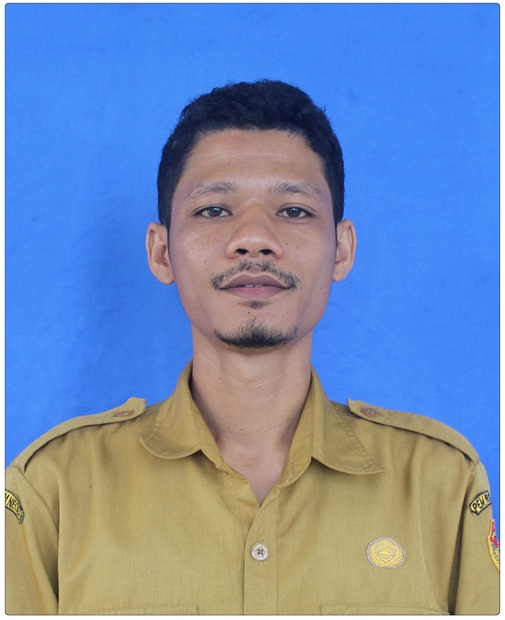
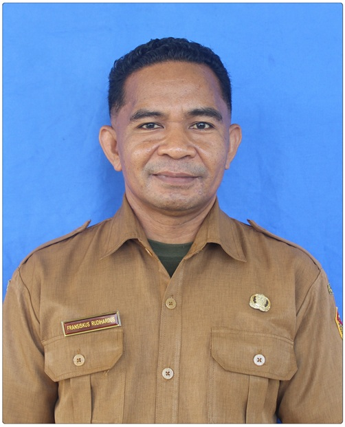

Pengimbasan Bimtek
Pemanfaatan Rumah Pendidikan
Meningkatkan Kualitas Pembelajaran Digital, Akses Sumber Belajar Terpadu, dan Penguatan Kompetensi Pendidik di SMA Negeri 1 Waigete.
Transformasi Digital
Ekosistem Belajar SMA Negeri 1 Waigete
Rumah Pendidikan
Portal Utama Pembelajaran Terpadu
Ruang GTK
Pengembangan Modul & Kompetensi
Ruang Murid
Resource Pembelajaran Mandiri Siswa
Papan Interaktif Digital
Media Pembelajaran Interaktif Kelas
Instansi Pelaksana
SMA Negeri 1 Waigete
Profil & Pelaksanaan
Informasi Kegiatan Pengimbasan
Pelaksana kegiatan pengimbasan Bimtek Pemanfaatan Rumah Pendidikan di SMA Negeri 1 Waigete.

Alexandros Arief Prasetya, S.Pd.
Guru / Tim Pengembang Digital SMA Negeri 1 Waigete
Bertanggung jawab mendampingi GTK dalam pemanfaatan portal Rumah Pendidikan dan integrasi perangkat pembelajaran di Ruang GTK.

Fransiskus Rudihardus, S.T.
Guru / Penanggung Jawab IT SMA Negeri 1 Waigete
Memfasilitasi infrastruktur teknis, akses akun, dan optimalisasi penggunaan Ruang Murid bagi pembelajaran digital peserta didik.
Lokasi Kegiatan
SMA Negeri 1 Waigete
Sasaran Peserta
Seluruh GTK SMA Negeri 1 Waigete
Tujuan Utama
Optimalisasi Portal Pendidikan
Pustaka Pembelajaran
Modul & Materi Pengimbasan
Materi presentasi pengimbasan utama yang mencakup pengenalan platform pendidikan dan penggunaan papan interaktif digital.
Presentasi Pengimbasan Bimtek
Dokumen presentasi terpadu Pengimbasan Bimtek Pemanfaatan Rumah Pendidikan SMA Negeri 1 Waigete yang merangkum keseluruhan cakupan sosialisasi dan modul praktik bagi GTK.
Cakupan Isi Presentasi:
Pengenalan Platform Pendidikan
Eksplorasi ekosistem Rumah Pendidikan, layanan Ruang GTK, serta fitur Ruang Murid.
Penggunaan Papan Interaktif Digital
Panduan pengoperasian papan interaktif digital untuk mendukung KBM yang komunikatif dan kolaboratif.
Pranala Resmi
Tautan Sumber Resmi Kementerian
Akses langsung ke platform utama ekosistem digital pendidikan resmi.
Rumah Pendidikan
Pusat integrasi layanan digital pendidikan resmi bagi pendidik, tenaga kependidikan, dan murid.
Ruang GTK
Layanan pengembangan kompetensi, perangkat ajar, serta fasilitas pelatihan profesionalisme guru.
Ruang Murid
Platform khusus peserta didik untuk mengeksplorasi bahan belajar interaktif dan modul digital.
Langkah Strategis
Panduan & Roadmap Tindak Lanjut GTK
Alur tahapan bagi Guru & Tenaga Kependidikan SMA Negeri 1 Waigete pasca kegiatan pengimbasan.
Aktivasi & Login Akun
Memastikan seluruh GTK SMA Negeri 1 Waigete dapat mengakses portal Rumah Pendidikan menggunakan akun pembelajaran resmi.
Eksplorasi Ruang GTK & Papan Digital
Mencari dan menelaah perangkat ajar serta mempraktikkan pengoperasian papan interaktif digital untuk KBM.
Pemanfaatan Ruang Murid
Mengarahkan dan membimbing peserta didik di SMA Negeri 1 Waigete untuk memanfaatkan fasilitas di Ruang Murid saat KBM.
Evaluasi & Refleksi Pembelajaran
Melakukan evaluasi integrasi digital berkala bersama tim pengembang sekolah (Alexandros & Fransiskus).
Checklist Mandiri Eksplorasi GTK
Gunakan checklist di bawah ini untuk mengukur ketercapaian eksplorasi mandiri Anda. Progres tersimpan secara otomatis di perangkat Anda.